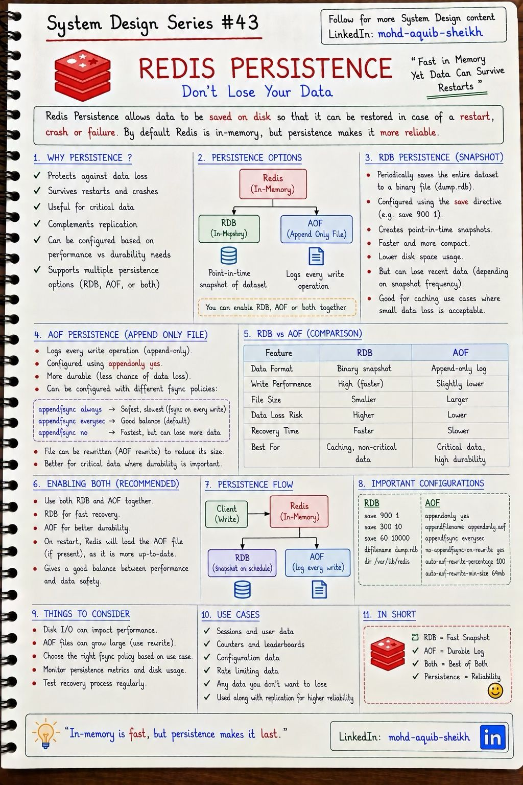
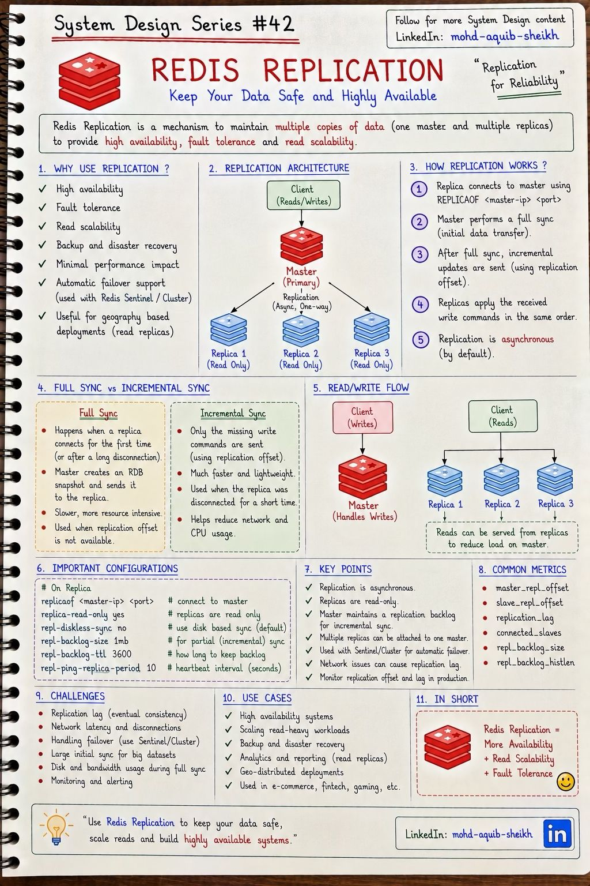
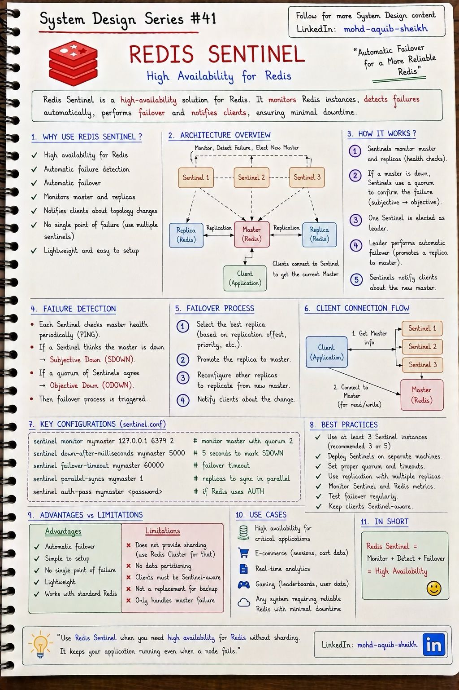
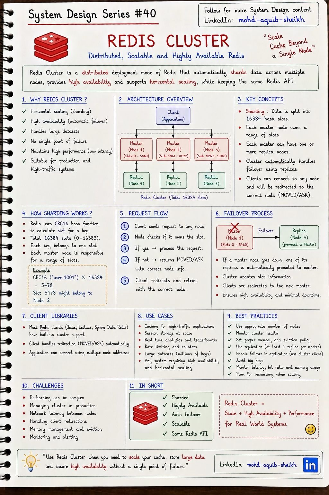

Redis: надёжность и масштабирование
Один процесс Redis хранит всё в памяти одного сервера. Четыре механизма снимают это ограничение по очереди: персистентность спасает данные при перезапуске, репликация создаёт копии, Sentinel автоматически переключает на копию, Cluster распределяет данные по нескольким серверам.
| Механизм | Какую проблему решает | Какую не решает |
|---|---|---|
| Персистентность | Данные переживают перезапуск процесса | Отказ сервера, доступность |
| Репликация | Копии данных, масштаб чтения | Автоматическое переключение |
| Sentinel | Автоматический failover | Объём данных больше памяти одного сервера, масштаб записи |
| Cluster | Шардирование + failover | Многоключевые операции между шардами |
10.1Персистентность: RDB и AOF#43
По умолчанию Redis живёт в памяти, и перезапуск означает пустую базу. Персистентность сохраняет данные на диск двумя способами: периодическим снимком всего набора (RDB) или журналом каждой команды записи (AOF).


| RDB (снимок) | AOF (журнал) | |
|---|---|---|
| Что на диске | Компактный бинарный файл состояния на момент времени | Последовательность команд записи |
| Потеря данных при сбое | Всё с последнего снимка (минуты) | До 1 секунды при everysec |
| Влияние на запись | Нет (кроме момента снимка) | Небольшое |
| Размер файла | Меньше | Больше; периодически переписывается (rewrite) |
| Восстановление | Быстрое — загрузить файл | Медленнее — проиграть команды |
| Для чего | Кэш, бэкапы | Данные, которые жалко потерять |
Политики appendfsync: always — сброс на диск после каждой записи (надёжно, медленно); everysec — раз в секунду (значение по умолчанию, разумный компромисс); no — на усмотрение ОС.
fork(): дочерний процесс получает «замороженную» копию памяти и пишет её на диск, родитель продолжает обслуживать запросы. Память не копируется сразу — работает copy-on-write: страница дублируется, только когда родитель её изменяет. При интенсивной записи во время снимка потребление памяти может вырасти почти вдвое, а сам fork большого процесса даёт заметную паузу. Вывод: серверу Redis нужен запас свободной памяти, а не «maxmemory = вся RAM».
10.2Репликация#42
Мастер принимает записи и пересылает поток команд репликам; реплики доступны только для чтения. Репликация асинхронная: мастер отвечает клиенту, не дожидаясь реплик.


Полная синхронизация
- При первом подключении реплики или после долгого разрыва.
- Мастер делает RDB-снимок и передаёт его целиком.
- Дорого:
fork, диск, сеть.
Частичная синхронизация
- После короткого разрыва.
- Мастер хранит недавние команды в кольцевом буфере (replication backlog) и досылает недостающее по смещению реплики.
- Если разрыв длиннее, чем вмещает буфер, — снова полная.
Практическое следствие: размер repl-backlog-size (по умолчанию 1 МБ) нужно увеличивать на нагруженных системах, иначе каждое кратковременное пропадание сети заканчивается полной синхронизацией, которая сама нагружает мастер.
OK, мастер упал до отправки команды реплике, реплику повысили до мастера — записи нет. Это фундаментальное свойство Redis, и оно определяет, что в нём можно хранить.
- Смягчение:
min-replicas-to-write 1иmin-replicas-max-lag 10— мастер отказывается принимать записи, если нет ни одной реплики с отставанием меньше 10 секунд. Ограничивает окно потери и защищает от split-brain. - Команда
WAITблокирует клиента, пока запись не дойдёт до N реплик, — но и она не превращает Redis в строго согласованную систему. - Для данных, потеря которых недопустима (деньги), Redis — кэш и ускоритель, а не источник истины.
10.3Sentinel#41
Репликация сама не переключает клиентов на реплику при отказе мастера. Sentinel — отдельные процессы-наблюдатели, которые следят за мастером и репликами, договариваются между собой об отказе, повышают реплику и сообщают клиентам адрес нового мастера.


- Каждый Sentinel периодически отправляет
PINGмастеру. Нет ответа дольшеdown-after-milliseconds— SDOWN (subjectively down): «я считаю, что мастер недоступен». - Sentinel опрашивает коллег. Если с ним согласны
quorumнаблюдателей — ODOWN (objectively down). - Наблюдатели выбирают лидера, который проведёт переключение. Для этого нужно согласие большинства всех Sentinel.
- Лидер выбирает лучшую реплику (приоритет, наименьшее отставание), повышает её и перенастраивает остальные.
- Клиенты узнают новый адрес у Sentinel.
quorum — сколько нужно для признания отказа, а для самого переключения всегда требуется большинство — это и защищает от split-brain.
Клиент должен знать о Sentinel: он подключается не к адресу мастера, а к списку наблюдателей и спрашивает «кто сейчас мастер для mymaster?». В Spring Data Redis — RedisSentinelConfiguration или свойства spring.data.redis.sentinel.master и .nodes.
Ограничение: Sentinel не шардирует. Все данные по-прежнему должны помещаться в память одного сервера, и запись идёт в один мастер.
10.4Cluster#40
Redis Cluster распределяет данные между несколькими мастерами и сам переключает на реплику при отказе. Пространство ключей разделено на 16 384 хэш-слота; каждый мастер отвечает за свой диапазон слотов.


slot = CRC16(key) mod 16384
CRC16("user:1001") mod 16384 = 5478 -- слоты 5461–10922 обслуживает узел 2
Путь запроса. Клиент отправляет команду любому узлу. Если слот принадлежит этому узлу — команда выполняется. Если нет — узел отвечает перенаправлением, и клиент повторяет запрос по указанному адресу. «Умные» клиенты (Lettuce, Jedis) кэшируют карту слотов и сразу идут на нужный узел.
| Ответ | Когда | Что делает клиент |
|---|---|---|
MOVED | Слот постоянно принадлежит другому узлу | Обновляет карту слотов и повторяет запрос |
ASK | Слот прямо сейчас переезжает, ключ уже на новом узле | Повторяет один запрос на новом узле, карту не меняет |
MGET, MULTI-транзакции, Lua-скрипты, пересечение множеств) работают, только если все ключи в одном слоте. Чтобы поместить связанные ключи вместе, используют хэш-теги: слот вычисляется только по части ключа в фигурных скобках. Ключи {user:1001}:profile и {user:1001}:cart гарантированно окажутся в одном слоте. Обратная сторона: неудачный тег собирает слишком много данных на одном узле.
- Минимальная конфигурация — три мастера и по реплике у каждого (шесть узлов). Узлы обмениваются состоянием по gossip-протоколу; отказ мастера подтверждается большинством мастеров, после чего его реплика повышается.
- Гарантии те же, что у репликации: асинхронная, подтверждённая запись может быть потеряна при переключении.
- Если отказали мастер и все его реплики, часть слотов недоступна — по умолчанию кластер перестаёт принимать запросы целиком (
cluster-require-full-coverage). - Изменение размера — перенос слотов между узлами (resharding) без остановки, но с нагрузкой на сеть и ответами
ASK.
10.5Интерактив: отказ мастера и работа Sentinel
10.6Самопроверка
Чем RDB отличается от AOF?
- Ничем
- RDB — журнал команд, AOF — снимок
- RDB — периодический снимок всей памяти (компактно, быстрая загрузка, потеря данных с последнего снимка); AOF — журнал каждой записи (меньше потерь, больше файл)
- AOF работает только в кластере
Как Redis Cluster определяет, на каком узле лежит ключ?
- По первой букве ключа
- CRC16(key) mod 16384 → хэш-слот; слоты распределены между мастерами
- Спрашивает у Sentinel
- Случайно
{user:1}.Почему Sentinel-ов должно быть минимум три?
- Для выбора лидера failover нужно большинство; при двух отказ одного блокирует переключение, а раздел сети грозит split brain
- Так быстрее репликация
- Каждый следит за своим узлом
- Требование лицензии
RDB или AOF для хранилища сессий, где потеря 5 минут данных неприемлема?
AOF с appendfsync everysec (потеря не более секунды), желательно вместе с RDB для быстрого восстановления и бэкапов. Только RDB с редкими снимками потеряет всё с момента последнего снимка. И персистентность не заменяет репликацию: при отказе сервера файл на его диске недоступен.
Почему во время снимка RDB потребление памяти может вырасти почти вдвое?
Снимок делает дочерний процесс после fork(), разделяющий страницы памяти с родителем по принципу copy-on-write. Каждая страница, изменённая родителем за время снимка, копируется. При интенсивной записи изменится большая часть страниц — и память будет занята дважды.
Клиент получил OK на SET, а после failover ключа нет. Как это возможно?
Репликация асинхронная: мастер подтвердил запись до её передачи реплике и вышел из строя. Повышенная реплика этой записи не имеет. Окно потери сужают min-replicas-to-write и WAIT, но строгой гарантии Redis не даёт.
Зачем Sentinel различает SDOWN и ODOWN?
Один наблюдатель мог потерять связь с мастером из-за собственной сетевой проблемы. SDOWN — его личное мнение; переключение по нему приводило бы к ложным срабатываниям и split-brain. ODOWN наступает, когда недоступность подтверждает кворум наблюдателей, а само переключение требует большинства.
В Redis Cluster транзакция MULTI над ключами cart:42 и stock:7 возвращает ошибку CROSSSLOT. Почему и что делать?
Ключи попали в разные слоты (возможно, на разные узлы), а многоключевые операции в кластере допустимы только в пределах одного слота. Варианты: хэш-теги, если ключи логически связаны ({order:99}:cart, {order:99}:stock); изменение модели данных (один хэш вместо двух ключей); перенос координации в приложение.